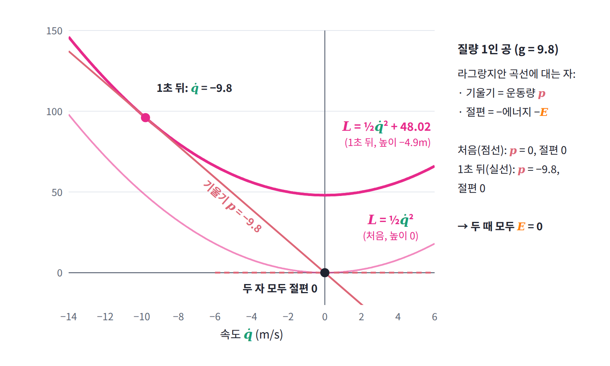
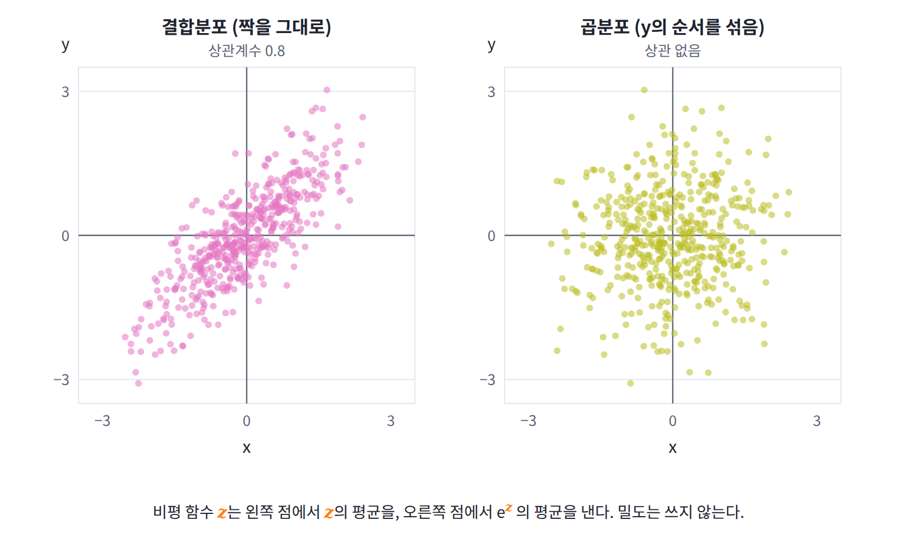

5장 — 르장드르 변환
이 장의 물음
ML에서 모델을 학습시킨다는 것은 대개 두 분포를 가깝게 만드는 일이다. 언어 모델을 최대우도로 학습하면 데이터 분포와 모델 분포 사이의 KL 발산을 줄이는 셈이고, 큰 모델의 출력을 작은 모델이 흉내 내도록 학습시키는 지식 증류에서는 같은 입력에 대한 두 모델의 출력 분포 사이의 KL을 줄인다. 강화학습으로 언어 모델을 미세조정할 때 정책이 원래 모델에서 너무 멀어지지 않도록 붙이는 벌점도 두 분포 사이의 KL이다. 이처럼 발산 (두 분포가 얼마나 다른지를 0 이상의 수 하나로 나타낸 것, divergence)은 학습의 목표 그 자체이거나 목표의 일부다.
위의 경우에는 발산을 식대로 계산할 수 있다. 모델이 확률을 직접 내놓기 때문이다. 그런데 확률은 모르고 샘플만 뽑을 수 있는 경우도 흔하다. GAN 같은 생성 모델은 그림을 뽑아 줄 뿐 그 그림이 나올 확률은 알려 주지 않고, 데이터 분포는 원래 샘플로만 주어진다. 표현 학습에서 「이 특징이 입력에 대한 정보를 얼마나 담았는가」를 재려 할 때도 손에 있는 것은 (입력, 특징) 쌍의 샘플뿐이다. 아래에 나오는 MINE(Belghazi 외, 2018)은 바로 이런 상황을 위해 나온 방법이다. 이름은 Mutual Information Neural Estimation, 곧 「신경망으로 상호정보량 재기」의 약자다. 상호정보량은 뒤에서 정의하지만, 지금은 두 변수를 함께 뽑은 분포와 따로 뽑은 분포 사이의 KL이라고만 알아 두면 된다. 처음 듣는 이름이어도 괜찮다. 필요한 것은 다음 단락의 주장 하나뿐이고, 그 주장이 왜 성립하는지가 이 장 전체의 이야기다.
두 분포 사이의 KL 발산을 알고 싶은데 손에 있는 것은 두 분포에서 뽑은 샘플뿐이라고 하자. KL은 두 밀도의 비에 로그를 씌운 뒤 평균한 값이므로, 밀도를 모르는 한 샘플만으로는 계산할 수 없을 것처럼 보인다. 그런데 MINE이라는 방법은 신경망 하나를 학습시키는 것만으로 이 값을 잰다. 신경망의 출력을 z라 할 때, 한쪽 샘플에서 구한 z의 평균에서 다른 쪽 샘플에서 구한 e^z의 평균에 로그를 씌운 값을 빼고, 이 차이가 커지도록 신경망을 학습하면 그 최댓값이 정확히 KL이 된다는 것이다. 밀도를 한 번도 적지 않았는데 어떻게 밀도 비의 평균이 나오는 걸까?
비슷한 모양의 식은 역학에도 있다. 라그랑지안 L(q, q̇)이 시간에 직접 의존하지 않으면 E = q̇·∂L/∂q̇ − L이라는 양이 보존되고, 이 양이 우리가 아는 에너지 K + U다. 그런데 왜 하필 「변수 곱하기 기울기, 빼기 원래 함수」라는 모양일까? 전혀 다른 곳에서 나온 두 식이 이렇게 닮은 것은 우연일까?
이 장은 다음 물음들에 차례로 답해 간다.
- 가격별 최대 이윤만 적힌 표를 받은 사람이 그 표만으로 공장의 비용 곡선을 되찾을 수 있을까?
- 골짜기가 둘인 곡선에 같은 일을 하면 무엇이 되돌아오지 않을까?
- 에너지는 왜 「속도 곱하기 기울기, 빼기 라그랑지안」이라는 모양일까?
- 교차 엔트로피 손실을 로짓으로 미분하면 왜 「softmax 출력 − 정답」이 나오고, sigmoid와 logit은 왜 서로 역함수일까?
- 밀도를 한 번도 적지 않고 샘플의 평균만으로 어떻게 두 분포의 KL을 잴 수 있을까?
역사: 최소 곡면에서 신경망 비평 함수까지
르장드르 변환은 한 분야의 도구로 태어난 뒤 200년 넘게 분야를 옮겨 가며 다시 발견되었다. 처음에는 곡면의 모양을 구하는 미분방정식을 푸는 기술이었고, 그다음에는 역학과 열역학의 변수를 바꾸는 기술이 되었으며, 1900년대에는 최적화 이론의 중심에 자리 잡았다. 그 흐름을 연도순으로 정리하면 다음과 같다.
| 연도 | 사람 | 내용 |
|---|---|---|
| 1787 | 르장드르 | 최소 곡면 문제를 푸는 논문에서, 곡면을 점들 대신 접평면들로 기술하는 변환을 도입 |
| 1834~1835 | 해밀턴 | 역학을 위치와 속도 대신 위치와 운동량으로 다시 씀. 이때 쓴 변수 바꾸기가 이 변환이다 |
| 1875~1878 | 깁스 | 『불균일 물질의 평형에 관하여』. 에너지의 변수를 바꾼 여러 열역학 퍼텐셜을 체계적으로 씀 |
| 1949 | 펜헬 | 「볼록 켤레 함수에 관하여」. 미분할 수 없는 볼록 함수까지 넓힌 볼록 켤레를 정립 |
| 1975~1983 | 돈스커, 바라단 | 대편차 연구에서 KL 발산을 함수에 대한 최대화 문제로 쓰는 표현을 얻음 |
| 2010 | 응우옌, 웨인라이트, 조던 | 같은 생각으로 f-발산을 샘플에서 추정하는 방법 |
| 2016 | 노보진 외 | f-GAN. 비평 함수를 신경망으로 두고 생성 모델을 학습 |
| 2018 | 벨가지 외 | MINE. 돈스커–바라단 표현으로 상호정보량을 추정 |
르장드르의 이름에는 얼굴에 관한 이야기가 하나 따라다닌다. 1830년대부터 수학사 책에, 나중에는 웹사이트에까지 「아드리엥마리 르장드르」라는 이름으로 옆얼굴 초상화가 실려 왔는데, 2005년 스트라스부르 대학의 학생 두 명이 이 그림이 프랑스 혁명기의 정치가 루이 르장드르의 초상이라는 것을 밝혀냈다. 1833년에 나온 석판화 모음집에서 성이 같은 두 사람이 뒤섞인 뒤, 본인 대신 남의 얼굴이 170년 넘게 쓰인 것이다. 진짜 얼굴은 2008년에야 파리의 프랑스 학술원에서 찾았는데, 화가 줄리앵레오폴 부아이가 1820년 무렵 학술원 회원 73명을 그린 수채 캐리커처 가운데 푸리에와 나란히 있는 한 장이었다. 지금까지 확인된 르장드르의 그림은 이것뿐이다.

얼굴이 바뀌어도 사람은 그대로이듯, 르장드르 변환도 함수의 「얼굴」, 곧 어떤 변수로 적혀 있는지를 바꾸지만 담긴 정보는 바꾸지 않는다. 이 장에서 확인할 것이 바로 그 사실이다.
작은 문제: 가격이 정해지면 몇 개를 만들까
한 공장이 하루에 물건 x개를 만드는 데 c(x) = x²만 원이 든다고 하자. 많이 만들수록 야근 수당이 붙고 설비가 붐비어서, 한 개를 더 만드는 데 드는 비용이 점점 커지는 공장이다. 시장에서 이 물건이 한 개에 s만 원에 팔린다면, 공장은 하루에 몇 개를 만들어야 이윤이 가장 클까? (경제학에서는 가격을 흔히 p로 쓰지만, 이 책에서 p는 확률의 글자이므로 가격은 기울기(slope)의 앞글자를 따 s로 쓴다.)
이윤은 판 돈 sx에서 비용 c(x)를 뺀 값이다. 가격 s가 주어졌을 때 얻을 수 있는 최대 이윤을 c*(s)라고 쓰자.
c(x) = x²이면 이윤 sx − x²을 x로 미분해 0으로 두면 되므로, 가장 좋은 생산량은 x* = s/2이고 그때의 이윤은 s²/4다. 가격을 바꿔 가며 표로 정리하면 다음과 같다.
| 가격 s (만 원) | 가장 좋은 생산량 x* (개) | 최대 이윤 c*(s) (만 원) |
|---|---|---|
| 2 | 1 | 1 |
| 4 | 2 | 4 |
| 6 | 3 | 9 |
| 8 | 4 | 16 |
| 10 | 5 | 25 |
이 표에서 두 가지를 읽어 낼 수 있다. 첫째, 가장 좋은 생산량에서는 한 개를 더 만드는 비용 c′(x*) = 2x*가 가격 s와 같다. 한 개를 더 만들어 팔았을 때 버는 돈이 드는 돈보다 크면 더 만들고 작으면 덜 만들 테니, 두 값이 같아지는 곳에서 멈추는 것이 당연하다. 둘째, 최대 이윤 c*(s) = s²/4를 가격으로 미분하면 s/2, 곧 그 가격에서의 생산량 x*가 나온다. 가격이 조금 오르면 이미 만들던 x*개를 각각 조금씩 더 비싸게 파는 셈이므로, 이윤은 대략 생산량만큼의 빠르기로 늘어난다는 뜻이다.

이 두 사실을 나란히 놓으면 묘한 대칭이 보인다. 비용 곡선을 미분하면 생산량에서 가격이 나오고, 이윤 곡선을 미분하면 가격에서 생산량이 나온다. 그렇다면 반대 방향으로도 갈 수 있을까? 공장 내부 사정은 전혀 모르고 「가격별 최대 이윤표」만 건네받은 사람이, 그 표만으로 원래의 비용 곡선 c(x)를 되찾을 수 있을까?
패턴: 곡선을 점 대신 접선으로 적기
비용 곡선 c(x) = x²의 그래프를 그리고, x = 5인 점에서 접선을 그어 보자. 그 점에서 곡선의 높이는 25이고 기울기는 10이므로, 접선은 y = 10x − 25다. 그런데 이 접선의 y절편 −25는 가격이 10일 때의 최대 이윤 25에 마이너스를 붙인 값과 같다. 다른 점에서 해 보아도 마찬가지여서, 기울기가 s인 접선의 식은 항상 다음과 같다.
왜 그럴까? 기울기가 s이고 절편이 b인 직선 sx + b가 곡선보다 항상 아래에 있으려면, 모든 x에서 b ≤ c(x) − sx여야 한다. 이 조건은 b가 −max(sx − c(x)) = −c*(s) 이하라는 말과 같다. 그러므로 기울기 s로 곡선 아래에 그을 수 있는 직선 가운데 가장 높은 것은 절편이 −c*(s)인 직선이고, 이 직선은 곡선에 딱 한 점에서 닿는다. 곧 접선이다. 다시 말해 c*(s)는 「기울기 s인 자를 곡선 아래에서 밀어 올려 닿을 때 그 자가 어디에 멈추는가」를 적은 값이다.

이제 앞 절의 질문에 답할 수 있다. 가격별 최대 이윤표를 가진 사람은 가격마다 기울기 s, 절편 −c*(s)인 직선을 하나씩 그릴 수 있다. 가격을 촘촘하게 바꾸며 직선을 수없이 그리면 그 직선들이 감싸는 모양, 곧 직선들 가운데 각 x에서 가장 높은 것을 이은 선이 나타나는데, 그것이 바로 원래의 비용 곡선이다. 식으로 쓰면 이렇다.
숫자로 확인해 보자. x = 3이면 3s − s²/4를 s에 대해 최대화해야 하고, 최대가 되는 것은 s = 6일 때로 그 값은 18 − 9 = 9이다. 실제로 c(3) = 3² = 9이다. 이윤표에서 비용 곡선을 되찾는 식이 비용 곡선에서 이윤표를 만드는 식과 똑같은 모양이라는 점에 주목하자. 같은 조작을 두 번 하면 제자리로 돌아오는 것이다.

지금까지 본 패턴을 모으면 세 가지다. 첫째, 볼록한 곡선은 「각 x에서의 높이」로도, 「각 기울기에서의 접선 절편」으로도 적을 수 있고 두 기술이 담은 정보는 같다. 둘째, 한 기술에서 다른 기술로 가는 식과 돌아오는 식이 같은 모양이다. 셋째, 두 기술의 도함수는 서로 역함수다. c′(x) = 2x는 생산량을 가격으로, c*′(s) = s/2는 가격을 생산량으로 보내므로, 둘은 같은 대응을 양쪽에서 본 것이다. 변수를 위치에서 기울기로 바꿔도 잃는 것은 없다.
정의: 볼록 함수
앞 절의 패턴은 x²이라는 곡선 하나에서 본 것이다. 그렇다면 어떤 모양의 곡선이어야 같은 일이 늘 일어날까? 자를 곡선 아래에서 밀어 올렸을 때 자가 곡선에 걸리려면, 곡선이 어디서나 아래로 둥글게 휘어 있어서 움푹 들어간 곳이 없어야 할 것이다. 이 모양을 말로 정확히 적으면, 그래프 위의 어떤 두 점을 잇는 선분도 그래프보다 아래로 내려가지 않는다는 것이다. 이런 함수를 볼록 함수 (아래로 볼록한 함수, convex function)라 한다. 비용 곡선 x², 지수함수 e^x, 교차 엔트로피 손실을 로짓의 함수로 본 것이 모두 볼록 함수다. 미분을 두 번 할 수 있는 함수라면 2차 도함수가 어디서나 0 이상인 것과 같은 말이고, 이때 기울기 f′(x)는 x가 커질수록 줄지 않는다.
정의: 르장드르 변환
그렇다면 공장이 아닌 다른 함수, 이를테면 지수함수 e^x에도 비용 곡선에서 이윤표를 만든 조작을 그대로 할 수 있을까? 그리고 그때도 이윤표처럼 모든 기울기에서 유한한 값이 나올까? 조작 자체는 어느 함수에나 쓸 수 있다. 함수 f가 주어지면 기울기 s마다 sx − f(x)를 가장 크게 만든 값을 대응시켜 새 함수 f*를 만들면 된다. 이렇게 만든 f*를 f의 르장드르 변환 (기울기로 다시 쓴 함수, Legendre transform)이라 한다. 최적화에서는 같은 함수를 볼록 켤레(convex conjugate)라고 부르며, 이 책에서도 두 이름을 섞어 쓰고 줄여서 켤레라고도 한다.
max 대신 sup을 쓴 이유는 최댓값이 없는 경우가 있기 때문이다. 이를테면 f(x) = e^x에서 s = −1이면 −x − e^x는 x를 음의 방향으로 보낼수록 끝없이 커지므로 f*(−1) = +∞이다. 켤레가 +∞인 기울기는 「그 기울기의 자로는 곡선에 닿을 수 없다」는 뜻이다. e^x의 기울기는 항상 양수이므로 기울기가 음수인 접선은 없다.

미분할 수 있을 때의 계산법
f가 매끄럽고 2차 도함수가 양수이면 sup은 미분이 0인 곳, 곧 f′(x) = s인 x에서 얻어진다. 기울기가 x에 따라 계속 커지므로 그런 x는 하나뿐이다. 그래서 물리 교재가 쓰는 르장드르 변환은 다음 두 단계로 이루어진다.
첫 식은 「기울기를 새 변수로 삼는다」는 선언이고, 둘째 식은 「새 변수 곱하기 원래 변수, 빼기 원래 함수」를 새 함수로 삼는다는 선언이다. 이때 둘째 식의 x는 첫 식을 풀어 s의 함수로 바꿔 넣어야 한다는 점이 중요하다. 값은 같더라도 s만으로 적혀 있지 않으면 아직 변환이 끝난 것이 아니다. 이렇게 얻은 f*를 s로 미분하면 x가 나오는데, 공장 문제에서 이윤 곡선의 기울기가 생산량이었던 것과 같은 이야기다.
자주 만나는 쌍을 표로 정리해 두자. 마지막 두 줄은 뒤의 ML 절에서 다시 만난다.
| f(x) | f가 정의된 곳 | f*(s) | f*가 유한한 곳 |
|---|---|---|---|
| ½x² | 모든 x | ½s² | 모든 s |
| ½ax² (a > 0) | 모든 x | s²/(2a) | 모든 s |
| e^x | 모든 x | s ln s − s (s = 0이면 0) | s ≥ 0 |
| x ln x | x > 0 | e^(s − 1) | 모든 s |
정의: 펜헬–영 부등식
f*(s)는 가장 좋은 x를 골랐을 때의 sx − f(x)다. 그렇다면 가장 좋은 x가 아니라 아무 x나 골라 s와 짝지으면, f(x)와 f*(s)와 sx 사이에는 어떤 관계가 남을까? 답은 정의에서 바로 나온다. f*(s)는 sx − f(x)의 sup이므로, 어떤 특정한 x를 골라도 sx − f(x)보다 작지 않다. 이항하면 다음을 얻는데, 이것을 펜헬–영 부등식 (Fenchel–Young inequality)이라 한다.
등호는 s가 정확히 x에서의 기울기 f′(x)일 때만 성립한다. 공장 문제로 읽으면 「어떤 생산량 x를 골라도 이윤 sx − c(x)는 최대 이윤을 넘지 못하고, 딱 맞는 생산량일 때만 같다」는 당연한 말이다. 그런데 양변의 차이 f(x) + f*(s) − sx는 항상 0 이상이고 맞는 짝에서만 0이므로, 예측과 정답이 얼마나 어긋났는지를 재는 손실 함수로 쓸 수 있다. 이 생각은 ML 절에서 교차 엔트로피의 정체로 다시 나온다.

마지막으로, 패턴에서 본 「두 번 하면 제자리」를 정리로 적으면 이렇다. f가 볼록이고 그래프에 끊긴 곳이 없으면 f*의 켤레는 다시 f다. 이 조건이 빠지면 어떻게 되는지가 다음 절의 주제다.

일반화: 볼록 껍질
지금까지는 볼록 함수만 다뤘다. 그렇다면 가운데가 불룩 솟은 함수, 이를테면 x = −1과 x = 1에 골짜기가 두 개 있고 x = 0에서 높이 1까지 솟은 f(x) = (x² − 1)²에는 무슨 일이 생길까? 이런 모양은 흔히 이중 우물(double well)이라 부른다.
먼저 물리 교재의 계산법이 막힌다. s = 0이면 f′(x) = 0인 점이 x = −1, 0, 1 세 개라서 「기울기가 s인 점」이 하나로 정해지지 않기 때문이다. 하지만 sup으로 쓴 정의는 여전히 쓸 수 있고, 세 후보 가운데 sx − f(x)가 가장 큰 것을 고르면 된다. 이렇게 수치로 구한 f*는 f*(0) = 0, f*(±1) ≈ 1.056, f*(±2) ≈ 2.207로 매끄러운 볼록 함수다. 사실 f가 어떤 함수든 f*는 항상 볼록이다. s의 직선들 sx − f(x)에서 가장 높은 것을 이은 함수이기 때문이다.
문제는 한 번 더 변환해서 돌아올 때 생긴다. f*의 켤레 f**를 격자 위에서 계산하면 다음과 같다.
| x | f(x) | f**(x) |
|---|---|---|
| 0 | 1 | 0 |
| 0.5 | 0.5625 | 0 |
| 1 | 0 | 0 |
| 1.5 | 1.5625 | 1.5625 |
골짜기 밖에서는 원래 함수가 그대로 돌아오지만, 두 골짜기 사이 −1 ≤ x ≤ 1에서는 불룩 솟은 부분이 사라지고 높이 0의 평평한 바닥이 남는다. 이유는 접선 그림으로 보면 분명하다. 곡선 아래에서 자를 밀어 올리면 자는 두 골짜기 바닥에 먼저 걸리므로, 그 사이의 불룩 솟은 곳에는 어떤 기울기의 자도 닿지 못한다. 자의 위치만 기록한 f*에는 그 부분의 정보가 애초에 들어 있지 않은 것이다.
일반적으로 f**는 f 아래에 있는 볼록 함수 가운데 가장 큰 것이고, 이를 f의 볼록 껍질 (움푹한 곳을 메운 함수, convex envelope)이라 부른다. 등호는 f가 이미 볼록일 때만 성립한다. ML에서도 같은 일이 일어난다. 볼록하지 않은 최적화 문제의 쌍대 문제를 풀면 원래 문제가 아니라 그 볼록 껍질을 푸는 셈이 되므로, 쌍대 문제의 답은 원래 답의 하한만 주고 둘 사이에 틈이 남는다. 최적화 이론에서 쌍대성 간극(duality gap)이라 부르는 것이 바로 그 틈이다.
일반화: 라그랑지안의 르장드르 변환
이제 이 장을 열며 던진 역학의 물음으로 돌아가자. 에너지는 왜 하필 「변수 곱하기 기울기, 빼기 원래 함수」라는 모양이며, 그 모양은 르장드르 변환과 어떤 관계일까? 질량 m인 물체의 라그랑지안은 L(q, q̇) = ½mq̇² − U(q)이고, 시간에 직접 의존하지 않는 라그랑지안에서 보존되는 양은 E = q̇·∂L/∂q̇ − L이다. 이 식을 앞에서 본 물리 교재의 계산법과 나란히 놓아 보면, 위치 q는 고정해 두고 속도 q̇만 변수로 보아 L을 르장드르 변환한 것과 정확히 같다. 새 변수는 L의 속도 쪽 기울기이고, 새 함수는 「새 변수 곱하기 원래 변수, 빼기 원래 함수」이다.
여기서 p는 확률의 p와 글자만 같고 뜻은 다른 양인 운동량 (momentum)이다. 물리와 HMC 문헌이 모두 이 글자를 쓰므로 그대로 두되, 이 책에서는 기울기 변수의 색으로 칠해 확률과 구별한다.
이 계산에서 세 가지를 읽을 수 있다. 첫째, E = q̇·∂L/∂q̇ − L이라는 어색한 모양은 우연이 아니라 르장드르 변환의 둘째 단계 그 자체다. 둘째, 변환이 끝났다고 말하려면 결과를 속도가 아니라 운동량으로 적어야 하므로, 에너지의 정직한 모양은 ½mq̇² + U가 아니라 p²/(2m) + U다. 질량 1인 공을 정지 상태에서 놓아 1초가 지나면 운동량은 −9.8, 높이는 −4.9이므로 E = 48.02 − 48.02 = 0이 되어 처음의 에너지 0과 같다. 셋째, 이 변환이 제대로 되는 것은 운동에너지 ½mq̇²이 속도에 대해 볼록이기 때문이다. 질량이 양수이므로 속도와 운동량은 하나씩 짝지어지고, 두 번 변환하면 L이 그대로 돌아온다.

다시 말해 에너지는 라그랑지안과 같은 정보를 담고 있고, 다른 것은 변수뿐이다. 라그랑지안이 「위치와 속도」로 운동을 적는다면 에너지는 「위치와 운동량」으로 같은 운동을 적는다. 공장 문제에서 비용 곡선과 이윤표가 같은 공장을 두 가지 변수로 적었던 것과 똑같다.
보기: 코드
격자 위의 르장드르 변환
르장드르 변환은 미분을 몰라도 계산할 수 있다. x와 s를 각각 촘촘한 격자로 두고, 각 s마다 sx − f(x)의 최댓값을 찾으면 된다. 아래 코드는 ½x²의 켤레를 확인하고, 이중 우물에 변환을 두 번 적용해 볼록 껍질이 나오는 것을 보인다.
import numpy as np
def legendre(f_vals, x, s):
# f*(s) = max_x (s x - f(x)) 를 격자 위에서 계산
return np.max(s[:, None] * x[None, :] - f_vals[None, :], axis=1)
x = np.linspace(-3, 3, 6001) # 원래 변수의 격자
s = np.linspace(-30, 30, 6001) # 기울기 변수의 격자
f = 0.5 * x**2 # 볼록 함수
f_star = legendre(f, x, s)
i = np.argmin(abs(s - 2.0))
print(f_star[i]) # 2.0 (= 2²/2)
f = (x**2 - 1)**2 # 볼록하지 않은 이중 우물
f_2star = legendre(legendre(f, x, s), s, x)
for xv in [0.0, 0.5, 1.5]:
j = np.argmin(abs(x - xv))
print(xv, round(f[j], 4), round(f_2star[j], 4))
# 0.0 1.0 0.0
# 0.5 0.5625 0.0
# 1.5 1.5625 1.5625
두 번 변환한 결과가 골짜기 밖(x = 1.5)에서는 원래 값과 같고, 두 골짜기 사이(x = 0, 0.5)에서는 0으로 내려가 있다. 격자 계산은 모든 x를 빠짐없이 훑으므로 f′(x) = s의 해가 여러 개여도 알아서 가장 큰 것을 고른다는 점도 눈여겨볼 만하다. 한 가지 주의할 점은 격자의 범위다. f*가 +∞인 기울기에서도 격자 계산은 유한한 값을 내놓는데, 이 값은 격자를 넓힐수록 계속 커진다. 값이 격자 범위에 따라 변하는지 확인하는 것이 「사실은 무한대」를 가려내는 가장 쉬운 방법이다.
샘플만으로 상호정보량 재기
이 장 첫머리에서 말한 MINE의 계산을 실제로 돌려 보자. 상관계수가 0.8인 두 정규분포 변수 x, y의 상호정보량(한 변수를 알 때 다른 변수에 대해 줄어드는 불확실성, mutual information)은 식으로 구할 수 있어서 −½ ln(1 − 0.8²) ≈ 0.511 nat이다. 상호정보량은 결합분포와 「두 주변분포의 곱」 사이의 KL이므로, 결합분포의 샘플은 (x, y) 쌍 그대로, 곱분포의 샘플은 y의 순서를 섞어 짝을 끊은 쌍으로 얻는다. 코드는 밀도를 한 번도 쓰지 않는다. 신경망 z(x, y) 하나를 두고, 결합분포에서의 z 평균에서 곱분포에서의 e^z 평균의 로그를 뺀 값을 키우도록 학습할 뿐이다. 이 신경망을 비평 함수 (두 분포를 가르는 점수 함수, critic)라 부른다.

import math, torch
torch.manual_seed(0)
corr = 0.8 # 두 변수의 상관계수
def sample(n):
x = torch.randn(n, 1)
y = corr * x + math.sqrt(1 - corr**2) * torch.randn(n, 1)
return x, y
critic = torch.nn.Sequential( # 비평 함수 z(x, y)
torch.nn.Linear(2, 64), torch.nn.ReLU(), torch.nn.Linear(64, 1))
opt = torch.optim.Adam(critic.parameters(), lr=1e-3)
def dv_bound(x, y):
joint = critic(torch.cat([x, y], 1)).mean() # <z>_결합분포
y_shuf = y[torch.randperm(len(y))] # 짝을 섞으면 곱분포
marg = critic(torch.cat([x, y_shuf], 1)).squeeze(1)
return joint - (torch.logsumexp(marg, 0) - math.log(len(y))) # - ln<e^z>_곱분포
for step in range(3000):
x, y = sample(512)
loss = -dv_bound(x, y) # 하한을 최대화
opt.zero_grad(); loss.backward(); opt.step()
with torch.no_grad():
x, y = sample(200000)
print(dv_bound(x, y).item()) # 0.5071 (MINE 추정값)
print(-0.5 * math.log(1 - corr**2)) # 0.5108 (참값)
추정값은 0.5071로 참값 0.5108에 가까우며, 시드를 1, 2, 3으로 바꿔도 0.504~0.506 사이에 머물렀다. 추정값이 참값보다 조금 작게 나오는 것은 우연이 아니다. 이 양은 비평 함수가 완벽할 때만 KL과 같고 그 밖에는 항상 작은 하한이기 때문이다. dv_bound 함수 마지막 줄의 logsumexp에서 ln N을 뺀 것은 「e^z의 표본 평균의 로그」를 수치적으로 안전하게 계산하는 방법이다. 왜 이 최대화가 KL을 돌려주는지는 다음 절에서 르장드르 변환으로 설명한다.
ML에서 만나는 곳
르장드르 변환이 ML에 남긴 것은 크게 세 가지다. 첫째는 분류 모델의 로짓과 확률이 한 쌍의 켤레 변수라는 사실이고, 둘째는 발산을 「비평 함수에 대한 최대화」로 바꾸는 f-GAN의 방법이며, 셋째는 같은 생각을 KL에 가장 날카롭게 적용한 MINE이다. 하나씩 살펴보자.
로짓과 확률은 켤레 변수다 (움직이는 것: 분포)
분류 모델이 로짓 z₁, …, z_K를 내놓으면 softmax가 이를 확률로 바꾼다. 이때 정규화에 쓰는 합의 로그, 곧 logsumexp를 이 장에서는 로그 분배함수 (정규화 합의 로그, log-partition function)라 부르고 ψ로 쓴다. ψ는 로짓의 볼록 함수이고, 그 기울기를 계산하면 놀랍게도 softmax 확률이 그대로 나온다.
공장 문제에 빗대면 로짓은 생산량 자리에, 확률은 가격 자리에 있다. 그렇다면 ψ를 확률의 함수로 다시 쓴 켤레 ψ*는 무엇일까? 계산법대로 「새 변수 곱하기 원래 변수, 빼기 원래 함수」를 만들고 zᵢ = ln pᵢ + ln Z를 넣으면, ln Z가 지워지고 다음만 남는다.
로그 분배함수의 켤레는 음의 엔트로피다. 반대 방향, 곧 두 번 변환하면 제자리라는 사실을 쓰면 다음 식을 얻는다.
이 식은 softmax가 무엇을 하는지를 한 줄로 말해 준다. 로짓의 가중 평균(높은 점수 쪽으로 몰리는 힘)과 엔트로피(고르게 퍼지는 힘)의 합을 가장 크게 하는 분포가 softmax이고, 그 최댓값이 ln Z다. 로짓이 (2, 0)이면 ln Z = 2.1269인데, softmax (0.8808, 0.1192)를 넣으면 1.7616 + 0.3653 = 2.1269로 딱 맞고, (0.7, 0.3)을 넣으면 2.0109, (1, 0)이면 2, (0.5, 0.5)이면 1.6931로 모두 그보다 작다.
이제 펜헬–영 부등식을 떠올려 보자. ψ(z) + ψ*(y) − Σ yᵢzᵢ는 항상 0 이상이고, y가 z의 기울기인 softmax일 때만 0이다. 여기에 정답 클래스가 c인 원-핫 벡터 y를 넣으면, 원-핫 벡터의 엔트로피는 0이므로 ψ*(y) = 0이다. 그러면 남는 것은 우리가 매일 쓰는 손실이다.
교차 엔트로피 손실은 펜헬–영 부등식의 틈 그 자체다. 이렇게 보면 로짓에 대한 기울기도 바로 보인다. ψ(z)의 기울기는 softmax p이고 Σ yᵢzᵢ의 기울기는 y이므로 손실의 기울기는 p − y, 곧 「예측 확률 − 정답」이다. 역전파 코드를 짜 본 사람이라면 외워 두었을 이 결과는 「로그 분배함수의 기울기가 확률이다」라는 켤레 관계를 반복해서 쓴 것이다. Blondel, Martins, Niculae(2020)의 「Learning with Fenchel–Young Losses」는 이 관점을 거꾸로 써서, 음의 엔트로피 자리에 다른 볼록 함수를 넣으면 softmax 대신 sparsemax 같은 새 출력층과 그에 맞는 손실이 한꺼번에 나온다고 보였다.
클래스가 두 개인 이진 분류에서는 같은 이야기가 더 익숙한 모습으로 나타난다. 로짓이 하나라면 로그 분배함수는 softplus ln(1 + e^z)이고 그 기울기는 sigmoid다. 켤레는 이진 엔트로피에 마이너스를 붙인 p ln p + (1 − p) ln(1 − p)이고 그 기울기는 ln(p/(1 − p)), 곧 logit 함수다. 켤레 쌍의 두 도함수는 서로 역함수이므로, sigmoid와 logit이 서로 역함수인 것은 공장 문제에서 한계비용 함수와 이윤 곡선의 기울기가 서로 역함수였던 것과 같은 이유다.
이 관계는 범주형 분포만의 것이 아니다. 정규분포, 푸아송 분포처럼 확률이 「매개변수와 특징의 곱」의 지수함수에 비례하는 분포들을 지수족(exponential family)이라 부르는데, 이때 지수에 들어가는 매개변수를 자연 매개변수(로짓의 일반형), 특징의 기댓값을 평균 매개변수(확률의 일반형)라 한다. 어느 지수족에서든 로그 분배함수의 기울기는 평균 매개변수이고 그 켤레는 음의 엔트로피다(엄밀히는 지수족의 기준 측도에 대한 상대 엔트로피이고, 기준이 균등하면 음의 엔트로피가 된다). 같은 분포를 자연 매개변수로 짚을 수도, 평균 매개변수로 짚을 수도 있으며, 한 좌표에서 다른 좌표로 옮겨 가는 변환이 곧 르장드르 변환이다. 모델이 로짓을 출력하고 손실은 확률로 계산하는 일상적인 학습은 사실 이 두 좌표를 오가는 일이다.

f-GAN: 발산을 비평 함수의 최대화로 (움직이는 것: 생성기의 매개변수와 비평 함수)
데이터 분포 p와 모델 분포 q가 얼마나 다른지 재는 발산은 대부분 다음 모양으로 쓸 수 있다. f는 f(1) = 0인 볼록 함수이고, 이렇게 만든 발산을 f-발산 (f-divergence)이라 한다. f(u) = u ln u를 고르면 KL 발산이 된다.
이 식을 샘플로 계산할 수 없는 이유는 f 안에 밀도의 비 pᵢ/qᵢ가 들어 있기 때문이다. 여기서 르장드르 변환이 등장한다. f는 볼록이므로 두 번 변환하면 제자리, 곧 f(u) = sup_z (zu − f*(z))로 쓸 수 있다. 이것을 각 i에 따로 적용하되 z를 i마다 다르게 고를 수 있게 하면, qᵢ가 분모를 지워 다음 부등식이 나온다.
오른쪽에는 밀도가 없다. 데이터 샘플에서 z의 평균을, 모델 샘플에서 f*(z)의 평균을 내면 된다. 어떤 z를 골라도 펜헬–영 부등식 때문에 발산의 하한이 되고, 등호는 z(x)가 정확히 f′(p/q)일 때 성립한다. KL이면 f*(z) = e^(z − 1)이므로 하한은 ⟨z⟩_p − ⟨e^(z − 1)⟩_q가 되고, 최적의 비평 함수는 1 + ln(p/q), 곧 밀도 비의 로그다. 이 하한은 Nguyen, Wainwright, Jordan(2010)이 발산 추정에 쓴 것이어서 두 사람 이름의 앞글자를 따 NWJ 하한이라 부른다.
Nowozin, Cseke, Tomioka(2016)의 f-GAN은 이 부등식을 그대로 학습 규칙으로 썼다. 비평 함수는 오른쪽을 키워 발산을 최대한 정확히 재려 하고, 생성기는 모델 분포 q를 움직여 그 값을 줄이려 한다. 최초의 GAN이 판별기와 생성기의 게임이었던 것도 f를 특정하게 고른 경우라는 것이 이 논문이 보인 핵심 가운데 하나다. 판별기의 로짓을 비평 함수라 보면, 판별기가 배우는 것은 결국 밀도 비의 로그다.
MINE: KL의 돈스커–바라단 표현 (움직이는 것: 비평 신경망)
KL에는 이보다 더 날카로운 표현이 있다. 출발점은 앞에서 본 ln Z의 식이다. 로짓 대신 임의의 함수 z(x)를, 균등한 기준 대신 분포 q를 기준으로 두고 같은 계산을 하면 엔트로피 자리에 q에 대한 KL이 들어간다.
이 식은 「ln⟨e^z⟩_q를 z의 함수로 본 것」과 「KL(·‖q)를 p의 함수로 본 것」이 한 쌍의 볼록 켤레라는 말이다. 그러므로 변환을 한 번 더 하면 KL 쪽이 최대화 문제로 나온다.
이것이 돈스커–바라단 표현이고, 보기 절의 코드가 최대화한 양이 바로 이 괄호 안이다. 최적의 비평 함수는 밀도 비의 로그에 어떤 상수를 더해도 좋다. 또 ln y ≤ y/e가 모든 양수 y에서 성립하므로, 같은 z를 넣으면 돈스커–바라단 쪽이 NWJ 하한보다 항상 크거나 같다. Belghazi 외(2018)의 MINE은 상호정보량 I(X; Y)가 결합분포와 주변분포의 곱 사이의 KL이라는 사실에 이 식을 적용했다. 논문의 핵심 정리는 「상호정보량 ≥ ⟨T⟩ − ln⟨e^T⟩」 한 줄인데, 이 장을 마친 독자는 이것을 「KL의 볼록 켤레를 두 번 취한 식이고, 비평 신경망 T는 밀도 비의 로그를 배운다」로 읽게 된다. 논문의 T는 이 책의 z와 같은 것이다. 대조 학습에서 쓰는 InfoNCE 손실도 같은 가족의 상호정보량 하한이라는 것이 Poole 외(2019)의 정리로 알려져 있다.
flowchart TD A["f-발산 D_f(p‖q)<br/>밀도 비 p/q가 필요"] --> B["f를 켤레로 풀기<br/>f(u) = sup_z (zu − f*(z))"] B --> C["⟨z⟩_p − ⟨f*(z)⟩_q<br/>샘플 평균만 필요"] C --> D["KL이면 NWJ 하한<br/>⟨z⟩_p − ⟨e^(z−1)⟩_q (f-GAN)"] E["ln⟨e^z⟩_q와 KL(·‖q)는<br/>한 쌍의 볼록 켤레"] --> F["DV 하한<br/>⟨z⟩_p − ln⟨e^z⟩_q (MINE)"] D -. "같은 z면 DV ≥ NWJ" .-> F
두 길 모두 밀도 비를 켤레 뒤로 숨겨 샘플 평균만 남기고, 최적의 비평 함수는 둘 다 밀도 비의 로그에 상수를 더한 꼴인데, NWJ는 그 상수가 1로 정해져 있고 DV는 아무 상수나 된다.
대화 연습
선생님의 수업. 김민준(학부 3학년, ML 강의 몇 개 수강)과 이서연(수학과 3학년)이 문제를 풀고, 선생님이 틀린 곳을 짚는다.
문제 1. 이윤표에서 비용 곡선 되찾기
어떤 공장의 가격별 최대 이윤이 c*(s) = s²/8(만 원)이다. 이 공장이 하루 4개를 만들 때 드는 비용은 얼마인가?

김민준되찾는 식은 c(x) = max(sx − c*(s))이죠. 최댓값이니까 미분해서 0으로 두면 돼요. x로 미분하면 s가 나오니까 s = 0이고, 그러면 c(x) = 0 − 0 = 0. 어… 비용이 0이에요? 공짜로 만드는 공장이네요.

이서연민준아, 최대화하는 변수가 x가 아니라 s야. max 아래에 s가 있잖아. s로 미분하면 x − s/4 = 0이니까 s = 4x고, c(x) = 4x² − 2x² = 2x². 네 개면 32만 원이야.

선생님맞아요. 민준 학생, 어느 변수를 움직이는지가 르장드르 변환의 전부예요. x는 여기서 고정된 입력이고, 골라야 하는 건 가격이에요. 이제 반대로 검산해 볼까요? c(x) = 2x²에서 출발해서 최대 이윤표를 다시 만들어 봐요.

김민준sx − 2x²을 이번엔 x로 미분해야죠. x = s/4, 이윤은 s²/4 − s²/8 = s²/8. 돌아왔네요. 갈 때는 x를, 올 때는 s를 움직이는 거고요.

이서연식의 모양은 같고 움직이는 변수만 바뀐 거네요. 그런데 이 공장은 앞에서 본 x² 공장보다 비용이 두 배라서 같은 가격에서 이윤은 절반이에요.

김민준조교가 채점표만 돌려줬을 때 문제를 거꾸로 맞히는 거랑 비슷하네요. 채점표가 충분히 자세하면 문제를 완전히 되찾을 수 있는 거고요.
선생님다만 「충분히 자세하면」이라는 조건이 중요해요. 어떤 경우에 완전히 되찾지 못하는지는 문제 3에서 봐요.
문제 2. 기울기가 음수인 자
f(x) = e^x의 볼록 켤레 f*(s)를 구하고, s = −1일 때의 값을 말하라.
김민준계산법대로 하면 s = e^x니까 x = ln s, f*(s) = s ln s − s. s = −1을 numpy에 넣었더니… nan이랑 경고가 떠요. numpy가 화났어요.

이서연음수의 로그니까 당연하지. 그러니까 s < 0에서는 f*가 정의되지 않는 거야.

선생님계산법 말고 정의로 돌아가 봐요. s = −1이면 −x − e^x의 sup이에요. x를 음의 방향으로 보내면 어떻게 되죠?

김민준격자로 해 볼게요. x를 −5부터 5까지 두면 최댓값이 4.99, −50부터 50까지 두면 50.0이에요. 격자를 넓힐수록 같이 커져요.

이서연e^x는 0으로 가고 −x는 끝없이 커지니까 sup은 +∞네요. 정의되지 않는 게 아니라 무한대였어요.
선생님그림으로 말하면, 기울기가 −1인 자는 e^x의 그래프 아래에서 아무리 밀어 올려도 닿지 않아요. e^x의 기울기는 항상 양수라서 그런 접선이 없거든요. 계산법은 「기울기가 s인 점이 있다」는 걸 전제로 하니까, 그런 점이 없으면 정의로 돌아가야 해요. 그럼 s = 0은요?

이서연−e^x의 sup이니까 0이에요. 닿지는 않고 다가가기만 하지만요. s ln s − s도 s가 0으로 갈 때 0으로 가니까 이어지네요. 해석학에서 max와 sup을 구별하라는 게 이럴 때 쓰이는군요.
김민준정리하면 s > 0이면 s ln s − s, s = 0이면 0, s < 0이면 +∞. nan은 틀린 답이었네요.
문제 3. 두 번 하면 정말 제자리인가
f(x) = (x² − 1)²에 대해 f*(0)과 f**(0)을 구하라.
이서연두 번 변환하면 제자리니까 f**(0)은 계산할 것도 없이 f(0) = 1이에요.

김민준저는 f*(0)부터 할게요. f′(x) = 4x³ − 4x = 0을 풀면 x = 0이 바로 보이니까, f*(0) = 0·0 − f(0) = −1.

선생님4x³ − 4x = 0의 해는 몇 개죠?
김민준−1, 0, 1… 세 개네요. 하나만 찾고 멈췄어요.
선생님정의는 sup이에요. 세 후보에서 0·x − f(x)를 다 계산해서 가장 큰 걸 골라야 해요.
김민준x = 0이면 −1, x = ±1이면 0. 그럼 f*(0) = 0이에요. 제가 고른 건 하필 가장 나쁜 후보였네요.

선생님볼록 함수에서는 기울기가 s인 점이 하나뿐이라 찾자마자 끝이지만, 볼록이 아니면 그런 점이 여럿이고 그중 대부분은 답이 아니에요. 이제 서연 학생의 답을 검산해 볼까요. f**(0) = sup_s(−f*(s))이고, f*는 볼록이면서 가장 작은 값이 f*(0) = 0이에요.

이서연그럼 −f*(s)의 최댓값은 0이니까 f**(0) = 0… 1이 아니네요. 제자리가 아니에요. 잠깐만요, 정리에 「f가 볼록이면」이 붙어 있었는데 제가 그걸 흘려 읽었어요.
선생님맞아요. 볼록이 아닌 함수는 두 번 변환하면 볼록 껍질이 돼요. 골짜기 사이의 봉우리는 어떤 기울기의 자로도 닿지 않으니까 f*에 기록되지 않고, 돌아올 때는 평평하게 메워져요. 그럼 한 번 더, f**를 다시 변환하면요?

이서연f**는 이미 볼록이니까 그 뒤로는 바뀌지 않겠네요. 선형대수에서 배운 사영이랑 같아요. P² = P라서 두 번 사영해도 한 번 한 것과 같지만, 사영하기 전 벡터로 돌아가지는 못하잖아요.


김민준그럼 f*만 들고 있는 사람은 x = 0에 봉우리가 있었는지 영영 모르는 거네요. 문제 1에서 말한 「충분히 자세한 채점표」가 아닌 거고요.
문제 4. 에너지를 운동량으로 쓰기
길이 l인 끈에 매달린 질량 m의 진자의 라그랑지안은 L = ½ml²θ̇² + mgl cos θ다. 각도 θ에 짝지어지는 운동량 p와, θ와 p의 함수로 쓴 에너지 E를 구하라.
김민준운동량은 질량 곱하기 속도니까 p = mθ̇.
이서연야, 그거 지난번에 내가 한 실수랑 똑같아. θ̇은 각속도라고.
선생님여기서 운동량의 정의는 「질량 × 속도」가 아니라 ∂L/∂θ̇이에요. 정의대로 미분해 봐요.
김민준∂L/∂θ̇ = ml²θ̇. l²이 붙네요. 그럼 E = pθ̇ − L = ml²θ̇² − ½ml²θ̇² − mgl cos θ = ½ml²θ̇² − mgl cos θ. 끝이에요.
선생님문제는 θ와 p의 함수로 쓰라고 했어요.

김민준θ̇ = p/(ml²)를 넣으면 E = p²/(2ml²) − mgl cos θ. 근데 값은 아까랑 똑같잖아요.

이서연저도 그게 궁금해요. 값이 같은데 굳이 바꿔 써야 하나요?
선생님두 식을 각각 미분해 보면 차이가 보여요. p로 쓴 E를 p로 미분하면 뭐가 나오죠?

이서연p/(ml²)니까 θ̇이에요. 속도가 돌아와요. 켤레의 도함수가 원래 변수를 돌려주는 거죠. 그런데 θ̇으로 쓴 E를 θ̇으로 미분하면 ml²θ̇ = p가 나오네요. 값은 같은 함수인데 미분은 전혀 다른 걸 돌려줘요. 아, 온도를 정의할 때 (∂S/∂E)_{V,N}처럼 고정하는 변수를 꼭 적으라고 하신 게 이거였군요.

선생님그래서 함수는 값만이 아니라 「무엇의 함수인가」까지 포함해야 해요. θ로도 미분해 볼까요?
김민준∂E/∂θ = mgl sin θ. 그런데 ∂L/∂θ = −mgl sin θ니까 부호만 반대네요. 이건 뭐에 쓰는 거예요?
선생님좋은 질문이에요. ∂E/∂p = θ̇과 ∂E/∂θ = −∂L/∂θ, 이 두 식을 적어 두세요. 오늘은 여기까지만 할게요.
문제 5. logsumexp의 켤레
클래스가 두 개인 로그 분배함수 ψ(z) = ln(e^(z₁) + e^(z₂))에 대해 (가) η = (0.7, 0.3)에서 ψ*(η)를 구하고, (나) η = (0.7, 0.7)이면 어떻게 되는지 말하고, (다) 로짓이 (2, 0)일 때 ln Z와 Σ pᵢzᵢ + H(p)를 여러 p에서 비교하라.
김민준(가)는 쉬워요. ψ의 기울기가 softmax니까 softmax(z) = (0.7, 0.3)이 되는 z를 찾으면 돼요. z = (ln 0.7, ln 0.3)이면 합이 1이라 ln Z = 0이고, ψ*(η) = 0.7 ln 0.7 + 0.3 ln 0.3 − 0 = −0.6109. 음의 엔트로피예요.
이서연그런데 그 z가 유일하진 않아. logsumexp는 엄격하게 볼록이니까 기울기와 z가 일대일일 거라고 생각했는데… z에 (1, 1)을 더해도 softmax가 안 바뀌잖아.
김민준그거 과제에서 overflow 막으려고 로짓에서 max를 빼던 트릭이잖아. 상수를 빼도 답이 안 바뀌어서 그렇게 했던 거고.
선생님둘 다 중요한 걸 짚었어요. ψ(z + c(1, 1)) = ψ(z) + c니까, ψ는 (1, 1) 방향으로는 곡선이 아니라 직선이에요. 엄격하게 볼록이 아니에요. 서연 학생, 그럼 ψ*(η)는 z를 어느 걸 고르느냐에 따라 달라질까요?
이서연η·(z + c(1, 1)) − ψ(z + c(1, 1)) = η·z + c(η₁ + η₂) − ψ(z) − c이고, η₁ + η₂ = 1이라 c가 지워져요. 값은 같아요. 다행이네요.
선생님지금 「η₁ + η₂ = 1이라서」라고 했죠. 그 조건이 없으면요? (나)로 가 봅시다.
김민준η = (0.7, 0.7)이면 softmax가 이런 값을 낼 수가 없으니까… 대응하는 z가 없으면 ψ*는 0이라고 두면 되지 않을까요?
선생님문제 2를 떠올려 보세요. 대응하는 점이 없을 때 어디로 돌아가야 했죠?
김민준정의요. 격자로 돌려 볼게요. z₁, z₂를 −30부터 30까지 두면 최댓값이 11.31, −60부터 60까지 두면 23.31이에요. 어, 이거 또 격자를 따라 커지는데요?
이서연z = (t, t)로 두면 바로 보여요. 1.4t − (t + ln 2) = 0.4t − ln 2라서 t를 키우면 끝없이 커져요. 격자 끝 t = 30이면 12 − 0.69 = 11.31, t = 60이면 23.31. 딱 맞네요. ψ*(0.7, 0.7) = +∞예요.
선생님그래서 ψ*는 η의 성분이 음이 아니고 합이 1일 때만 유한해요. 합이 1이 아니면 로짓 전체에 상수를 더하는 방향으로 끝없이 올라가고, 음수 성분이 있으면 그 로짓만 내리는 방향으로 올라가요. 켤레가 유한한 곳이 곧 확률 벡터의 조건이에요.
이서연확률의 공리를 따로 가정한 적이 없는데 켤레의 정의역에서 저절로 나왔네요. 합이 1인 건 ψ가 (1, 1) 방향으로 기울기 1인 직선이어서고요.
선생님이제 (다)예요. 로짓 (2, 0)에서 ln Z는 2.1269예요. 여러 p를 넣어 봐요.
김민준제일 큰 로짓에 몰아주는 게 최선이죠. p = (1, 0)이면 2 + 0 = 2. 어, 2.1269보다 작은데요?

이서연나는 균등하게. (0.5, 0.5)이면 1 + 0.6931 = 1.6931. 더 작네.

김민준그럼 중간에 답이 있겠네요. (0.7, 0.3)은 2.0109, (0.95, 0.05)는 2.0985… softmax인 (0.8808, 0.1192)를 넣으면 1.7616 + 0.3653 = 2.1269. 딱 ln Z예요!
선생님민준 학생의 (1, 0)은 argmax예요. 로짓 점수는 가장 높지만 엔트로피를 하나도 받지 못했고, 서연 학생의 균등 분포는 반대예요. softmax는 두 힘 사이의 균형점이고, 그 균형점의 값이 ln Z예요.
이서연그럼 엔트로피 항 앞에 계수를 붙이면 균형점이 옮겨가겠네요. 계수가 커지면 균등 쪽으로, 작아지면 argmax 쪽으로요. softmax 온도랑 같은 거 아니에요?
선생님좋은 관찰이에요. 확인은 숙제로 남길게요.

김민준정리하면 로짓과 확률은 공장 문제의 생산량과 가격이고, ln Z는 비용 곡선, 음의 엔트로피는 이윤표인 거네요. 교차 엔트로피를 수십 번 짜 봤는데 이런 생각은 처음 해 봐요.
이서연나는 엔트로피가 별도로 정의한 양이 아니라 ln Z에서 자동으로 나온다는 게 더 놀라워.
문제 6. 같은 비평 함수, 다른 하한
데이터 분포 p는 평균 1, 분산 1인 정규분포이고 기준 분포 q는 표준정규분포다. 두 분포의 KL은 0.5다. 비평 함수 z(x) = x를 NWJ 하한 ⟨z⟩_p − ⟨e^(z − 1)⟩_q와 돈스커–바라단(DV) 하한 ⟨z⟩_p − ln⟨e^z⟩_q에 넣어 비교하라. (q가 표준정규분포이면 ⟨e^(ax)⟩_q = e^(a²/2)다.)
김민준NWJ부터 할게요. ⟨x⟩_p = 1이고 ⟨e^(x − 1)⟩_q = e^(−1)·e^(1/2) = e^(−0.5)니까 1 − 0.6065 = 0.3935. 어, KL은 0.5라면서요. 제가 틀렸나 봐요.
선생님계산은 맞아요. 이 식은 무엇이었죠?
김민준하한이요. 어떤 z를 넣어도 KL보다 작거나 같은 값이에요. 아, 0.39가 나온 건 틀린 게 아니라 z가 최적이 아니라는 뜻이네요.
이서연DV는 1 − ln e^(1/2) = 0.5. 같은 z인데 DV는 참값이 나오네요. 최적의 비평 함수는 밀도 비의 로그인데, ln(p/q) = x − 0.5니까 z = x는 거기서 상수만 다르고, DV는 상수 차이를 상관하지 않아요.
선생님그럼 NWJ가 원하는 최적의 z는요?
이서연본문에서 1 + ln(p/q)라고 했으니까 x + 0.5예요. 넣어 보면 1.5 − ⟨e^(x − 0.5)⟩_q = 1.5 − 1 = 0.5. 이번엔 참값이에요.
김민준그럼 상수를 크게 잘못 잡으면 어떻게 돼요? z = x + 3을 넣어 볼게요. NWJ는 4 − e^(2.5) ≈ −8.18이고… DV는 4 − ln e^(3.5) = 0.5. 우와, NWJ는 음수까지 떨어지는데 DV는 꼼짝도 안 하네요.
선생님샘플 400만 개로 몬테카를로 계산해도 NWJ는 0.394, 0.501, −8.17이고 DV는 세 경우 모두 0.501이 나와요. 그럼 같은 z에서 DV가 항상 NWJ보다 크거나 같다는 걸 보일 수 있을까요?
이서연빼는 항만 비교하면 돼요. y = ⟨e^z⟩_q라 두면 ln y ≤ y/e를 보이면 되는데, y/e − ln y를 미분하면 y = e에서 최소이고 그때 값이 1 − 1 = 0이에요. 해석학 연습문제로 자주 나오는 부등식인데 여기서 만날 줄은 몰랐네요.
김민준그럼 MINE이 DV를 고른 이유가 이거군요. 근데 스터디에서 DV는 로그 안에 평균이 들어 있어서 미니배치로 구한 기울기가 편향된다고 들었어요.
선생님맞아요. 미니배치 평균의 로그는 참 평균의 로그와 기댓값이 다르니까요. 그래서 MINE 논문은 분모 쪽 평균을 이동 평균으로 바꿔 기울기의 편향을 줄였어요. NWJ는 편향은 없는 대신 상수까지 맞춰야 하고요. 두 하한은 같은 르장드르 변환에서 나왔지만, 켤레를 다루는 방식이 달라서 실무에서의 장단점이 갈려요.
자주 하는 실수와 요약
자주 하는 실수
| 실수 | 나온 문제 | 바로잡는 법 |
|---|---|---|
| 최대화하는 변수를 헷갈림 (x와 s) | 1 | max나 sup 아래에 적힌 변수만 움직인다 |
| s ln s − s를 음의 s에도 그대로 씀 | 2 | 기울기가 s인 점이 없으면 sup 정의로 돌아간다 |
| 「정의되지 않음」과 +∞를 혼동 | 2, 5 | 격자를 넓혀 값이 따라 커지는지 본다 |
| f′(x) = s의 해를 하나만 찾고 멈춤 | 3 | 볼록이 아니면 모든 해에서 sx − f(x)를 비교한다 |
| 두 번 변환하면 항상 제자리라고 봄 | 3 | 볼록일 때만. 아니면 볼록 껍질이 나온다 |
| 운동량을 「질량 × 속도」로 씀 | 4 | p = ∂L/∂q̇를 정의대로 미분한다 |
| 변환 결과를 옛 변수로 적은 채 끝냄 | 4 | 새 변수(기울기)만으로 다시 쓴다. 미분의 뜻이 달라진다 |
| logsumexp를 엄격한 볼록 함수로 봄 | 5 | 로짓 전체에 상수를 더하는 방향으로는 직선이다 |
| argmax가 ln Z를 만드는 분포라고 봄 | 5 | 엔트로피 항까지 더하면 답은 softmax다 |
| 하한이 참값보다 작으면 계산이 틀렸다고 봄 | 6 | 하한은 최적의 비평 함수에서만 참값과 같다 |
| NWJ와 DV를 같은 것으로 봄 | 6 | DV는 상수 이동에 불변이고 항상 NWJ 이상이다 |
요약
이 장에서 한 일을 정리해 보자. 공장의 비용 곡선에서 가격별 최대 이윤표를 만들고, 그 표가 곡선의 접선들의 절편을 적은 것이며 같은 조작으로 비용 곡선을 되찾을 수 있음을 확인했다. 이 조작이 르장드르 변환 f*(s) = sup_x(sx − f(x))이고, 미분할 수 있으면 「기울기를 새 변수로, sx − f를 새 함수로」라는 두 단계가 된다. 볼록 함수는 두 번 변환하면 제자리로 돌아오고 두 함수의 도함수는 서로 역함수이지만, 볼록이 아니면 볼록 껍질만 남는다. 역학에서는 라그랑지안을 속도에 대해 변환하면 운동량이 새 변수로, 에너지가 새 함수로 나오므로 E = q̇·∂L/∂q̇ − L이라는 모양은 이 변환의 결과다. ML에서는 로짓과 확률이 한 쌍의 켤레 변수이고, 로그 분배함수의 켤레는 음의 엔트로피이며, 교차 엔트로피 손실은 펜헬–영 부등식의 틈이다. 발산 안의 볼록 함수를 켤레로 풀면 밀도 비가 사라지고 비평 함수에 대한 최대화만 남는데, 이것이 f-GAN과 MINE이 샘플만으로 발산을 재는 방법이다.
막힌 곳
이제 우리는 라그랑지안을 속도 대신 운동량의 함수로, 곧 에너지 E(q, p) = p²/(2m) + U(q)로 옮겨 적을 수 있고, 두 기술이 같은 정보를 담는다는 것도 안다. 하지만 변수를 바꾼 것만으로는 아직 얻은 것이 없다. 운동방정식은 여전히 라그랑지안에서 나온 가속도의 방정식으로 적혀 있고, 대화 연습에서 적어 둔 두 식 ∂E/∂p = q̇과 ∂E/∂q = −∂L/∂q가 무엇을 말하는지도 아직 모른다. 위치와 운동량을 두 축으로 하는 평면에 물체의 상태를 점 하나로 찍으면, 시간이 흐를 때 그 점은 어떤 규칙으로 움직이며, 그 평면에서 여러 상태가 함께 차지하는 넓이는 시간이 지나면 어떻게 될까?